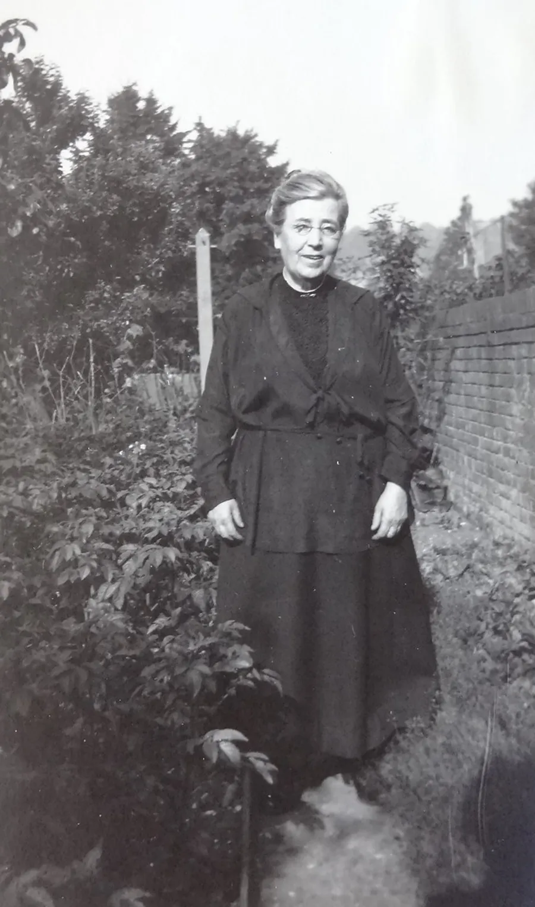
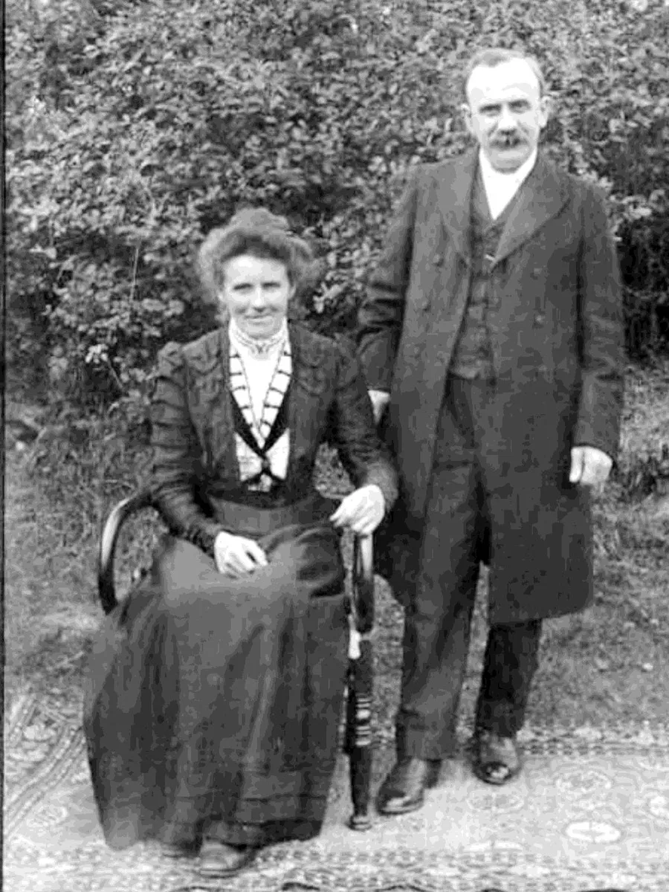
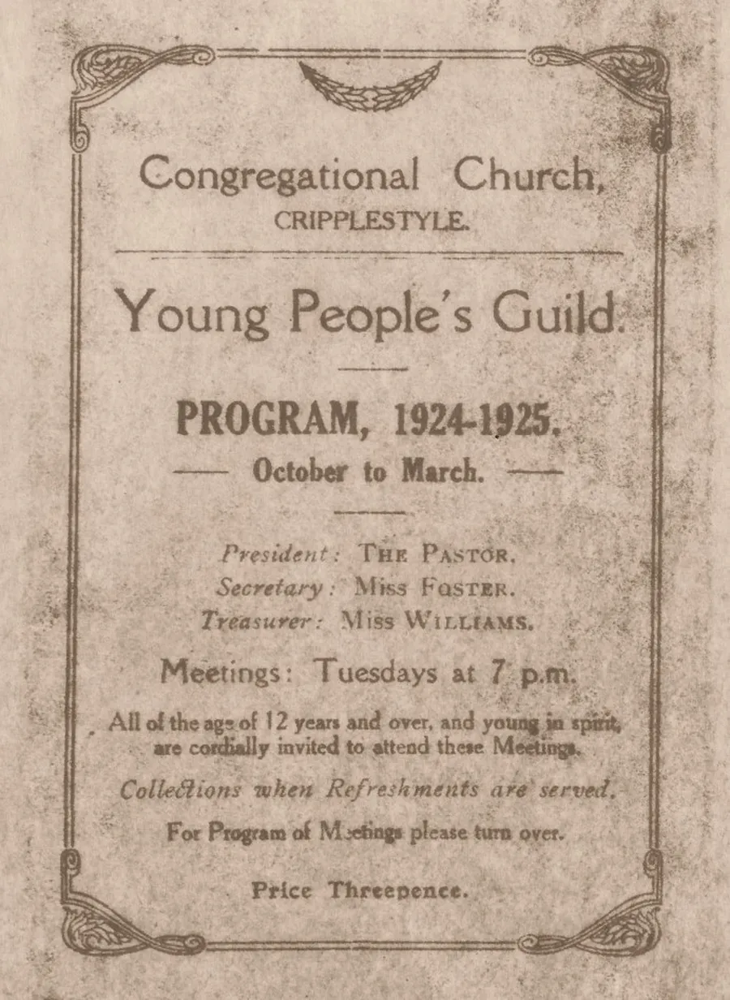

The Young People's Guild
by Adrian King

The Young People's Guild was a youth group that met at Cripplestyle Congregational Church. The group had the remit that all of the age of 12 years and over and young in spirit are cordially invited to these meetings.
The group met from October to March on Tuesdays at 7.00 pm.

There are programs from 2nd Oct 1923 to 30th March 1926 but it probably continued for much longer.
The pastor, Rev. Charles William Tyrrell Whatley (1869–1949) was the president with Miss Foster as the secretary and Miss Susannah Williams as treasurer.
The printed program was threepence and collections only taken when refreshments were served.
The program was varied with a social evening at least once a month. There were lectures illustrated by lantern shows the subjects being scriptural or topical.
Local choirs, bands and soloists visited

What would have happened if life had taken a different course?
Lectures in the first year
- What we owe to the reformation in England
- Lessons from Clocks – Rev. J. G. Ferriday
- Life and times of George Whitfield – Rev. E. H. L. Jones
- What we owe to the Oxford Methodists
- A great event in 1662 Rev – A. A. Price
- Letters from an eccentric friend together with remarks upon letter writing generally
- Who were the men of the Mayflower?
- Ireland from the days of Henry II to the present time
- A talk on the British Navy – Mr. F. J. Palmer (Verwood)
- Robert and Mary Moffatt South African Missionaries
- Queer Folk – Rev. J. G. Ferriday
- What we owe to the church in England
- The Ballads and Lyrics of Tennyson – Rev. H. E. Heywood A.T.S
- Hudson Taylor and the China Inland Mission
- An evening with Horatius Bonar and his hymns – Rev. E. H. I. Jones
And that was just the first year. Later years were not so intensive. Makes you wonder what 12-year-old would handle this information today. In context the school leaving age had been raised from 12 to 14 in 1918 and to 15 in 1944.
My mother would have been 14 in 1944.
